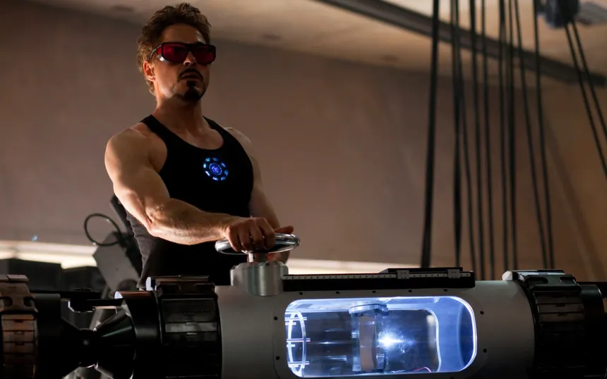

Tony Stark Portfolio
Anthony Edward Stark | Iron Man

Summary about him
Genius, Billionaire, Playboy, Philanthropist with expertise in advanced robotics, artificial intelligence, clean energy, and weapons technology. Founder of Stark Industries and creator of the Iron Man armor. Dedicated to protecting humanity through technological innovation.
Education
- Massachusetts Institute of Technology (MIT) - B.S. in Mechanical Engineering
- Harvard University - M.S. in Electrical Engineering
- Stanford University - Ph.D. in Robotics
Work Experience
- Founder & CEO — Stark Industries
1991 – 2008
- Led the development of advanced weaponry and defense systems.
- Oversaw the creation of the Iron Man armor and other cutting-edge technologies.
- Managed a global team of engineers and scientists.
- Avengers Initiative — Team Leader
2008 – Present
- Coordinated missions to protect the world from various threats.
- Developed and implemented advanced strategies for team operations.
- Provided technological support and innovation for the Avengers.
Skills
- Advanced Robotics⭐️
- Artificial Intelligence⭐️
- Mechanical Engineering⭐️
- Electrical Engineering⭐️
- Leadership and Team Management⭐️
- Strategic Planning and Problem Solving⭐️
Awards and Achievements
- Creator of the Iron Man armor.
- Inventor of the Arc Reactor.
- Founding member of the Avengers.
- Recipient of multiple technological and scientific honors.
- Saved half the universe through the use of the Infinity Stones.
Other Information